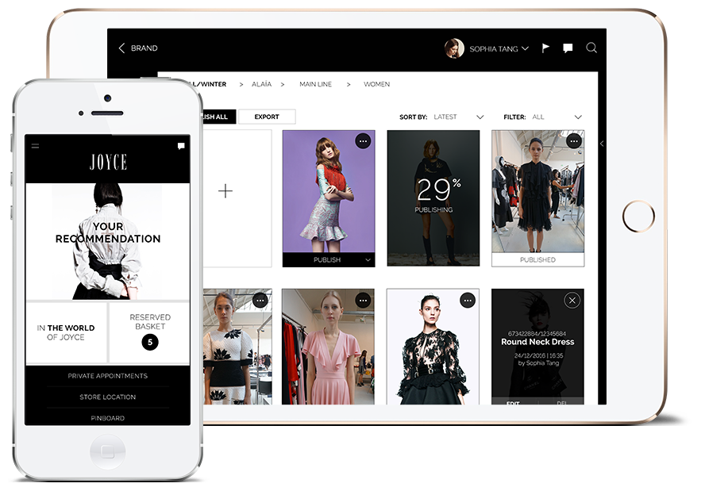

MOBILE APP / IPAD APP
JOYCE SHOWROOM
Overview
JOYCE, a pioneer in luxury retail, is the franchise of internationally renowned fashion, accessories and cosmetics designer brands. Being the first to discover and introduce international designers to Hong Kong since 1971, with over 45 years experience in the industry, JOYCE strives to constantly collaborate with the world’s top talented creative to provide a personalized and unique edit of the very best fashion collections to customers. Moving forward, JOYCE sticks to the insight of reinforcing customer loyalty and driving sales from VIP customers through the implement of internal apps and a customer-facing app to create a seamless channel covering the marketing and daily operational needs.

Overview
JOYCE, a pioneer in luxury retail, is the franchise of internationally renowned fashion, accessories and cosmetics designer brands. Being the first to discover and introduce international designers to Hong Kong since 1971, with over 45 years experience in the industry, JOYCE strives to constantly collaborate with the world’s top talented creative to provide a personalized and unique edit of the very best fashion collections to customers. Moving forward, JOYCE sticks to the insight of reinforcing customer loyalty and driving sales from VIP customers through the implement of internal apps and a customer-facing app to create a seamless channel covering the marketing and daily operational needs.
Challenge
This year, JOYCE targets at driving more sales from their existing VIP customers who always want to wear the latest fashion one step ahead of others. JOYCE tries to bring them the latest collections from various brands right after the fashion shows.
Previously, sales personnel would recommend items to VIP customers with instant messaging tools. However, without a systematic catalog, item information inevitably falls to bits and pieces when shared with customers. The communication hence becomes inefficient and lacking in transparency. Meanwhile, buyers are in need of a handy system to help them record all the item details on the spot when they work overseas. As different tiers of staff are involved in the ordering and product discussion processes, the traditional manual method of marking order records on spreadsheets would just slow down the whole process.
Previously, sales personnel would recommend items to VIP customers with instant messaging tools. However, without a systematic catalog, item information inevitably falls to bits and pieces when shared with customers. The communication hence becomes inefficient and lacking in transparency. Meanwhile, buyers are in need of a handy system to help them record all the item details on the spot when they work overseas. As different tiers of staff are involved in the ordering and product discussion processes, the traditional manual method of marking order records on spreadsheets would just slow down the whole process.
Solution
To improve internal and external communications, Mtel has adopted an Omni channel strategy via implementing different digital solutions including a customer smartphone app and an iPad app with different versions fitting for various users. Called ‘Showroom’, the staff app and the customer app are pairing with each other.
The customer app aims to enhance VIP experience by providing highly personalized service as well as adding a new mCommerce channel. Styling service no longer only happens in physical showroom, we extend it to the mobilized space. While customers can add photos of their interested stuff to the Pinboard, sale personnel could gain better understanding on customers’ preferences, needs and what they are interested in. Then staff could recommend items from the fashion collection that most likely customers would choose. With this feature, staff can approach customers proactively rather than passively waiting for them to visit the store.
Apart from the above, customers can make bookings and check their appointment status through the app. Making it easier to make a booking brings customers from online to offline. Customers can also review their accounts balance, place deposits for reserved items and process payments through the app. Rather than one-way communication, VIP customers can now contact sale personnel via the chat box in the app. Connecting with customers day and night helps drive more sales from existing VIP customers.
Apart from the loyalty programme, USO introduces a sticker-sharing feature to capture the great commercial potential. Being Hong Kong's first Kpop sticker-sharing platform, USO offers over 5,000 Kpop star stickers and eCards on various instant messaging tools. Users can simply select their favorite stickers on the sticker keyboard shown on IM tools.
The internal app covers needs of staff of different tiers and keep everyone in sync with the latest information. When a buyer adds a product onto the platform, sale personnel and managers over the Hong Kong side can see it immediately. It centralizes all collected information. Sizes, color, details of an item are shown in a clear, categorized way. There is also a time-saving discussion feature here. Staff can leave a comment on a product, which leverages staff time to find out FAQ on products. With this mobilized catalog, sale personnel can send recommended items to VIP customers.
Showroom is powered by Amazon Web Service. The service Elastic Compute Cloud (EC2) provides resizable compute capacity in the cloud. It reduces the chance of app failure and isolates Showroom from common failure scenarios. While buyers keep importing product photos to the app gallery, Simple Storage Service (S3) provides secure, durable, highly-scalable and limitless cloud storage. These technologies help Showroom run smoothly even more as data ingestion are ongoing.
The staff app also has an ordering system centralizing all orders. While sale personnel send orders to buyers through the system, managers can monitor staff activities as well as processing order approvals. All the ordering statuses are shown in one place and kept in high transparency.
Joyce Showroom demonstrates how technology could benefit and integrate into the fashion industry. Internal communication has never been this efficient: no more long email chains, but only instant responses. As the entire ordering process is speeded up, work efficiency is improved and presentable contents are smoothly delivered to customers.
The customer app aims to enhance VIP experience by providing highly personalized service as well as adding a new mCommerce channel. Styling service no longer only happens in physical showroom, we extend it to the mobilized space. While customers can add photos of their interested stuff to the Pinboard, sale personnel could gain better understanding on customers’ preferences, needs and what they are interested in. Then staff could recommend items from the fashion collection that most likely customers would choose. With this feature, staff can approach customers proactively rather than passively waiting for them to visit the store.
Apart from the above, customers can make bookings and check their appointment status through the app. Making it easier to make a booking brings customers from online to offline. Customers can also review their accounts balance, place deposits for reserved items and process payments through the app. Rather than one-way communication, VIP customers can now contact sale personnel via the chat box in the app. Connecting with customers day and night helps drive more sales from existing VIP customers.
Apart from the loyalty programme, USO introduces a sticker-sharing feature to capture the great commercial potential. Being Hong Kong's first Kpop sticker-sharing platform, USO offers over 5,000 Kpop star stickers and eCards on various instant messaging tools. Users can simply select their favorite stickers on the sticker keyboard shown on IM tools.
The internal app covers needs of staff of different tiers and keep everyone in sync with the latest information. When a buyer adds a product onto the platform, sale personnel and managers over the Hong Kong side can see it immediately. It centralizes all collected information. Sizes, color, details of an item are shown in a clear, categorized way. There is also a time-saving discussion feature here. Staff can leave a comment on a product, which leverages staff time to find out FAQ on products. With this mobilized catalog, sale personnel can send recommended items to VIP customers.
Showroom is powered by Amazon Web Service. The service Elastic Compute Cloud (EC2) provides resizable compute capacity in the cloud. It reduces the chance of app failure and isolates Showroom from common failure scenarios. While buyers keep importing product photos to the app gallery, Simple Storage Service (S3) provides secure, durable, highly-scalable and limitless cloud storage. These technologies help Showroom run smoothly even more as data ingestion are ongoing.
The staff app also has an ordering system centralizing all orders. While sale personnel send orders to buyers through the system, managers can monitor staff activities as well as processing order approvals. All the ordering statuses are shown in one place and kept in high transparency.
Joyce Showroom demonstrates how technology could benefit and integrate into the fashion industry. Internal communication has never been this efficient: no more long email chains, but only instant responses. As the entire ordering process is speeded up, work efficiency is improved and presentable contents are smoothly delivered to customers.
Insight
Effective communication is the key to success, no matter communications with customers or internal communications. Knowing customers better helps retails address their needs and deliver exceptional customer experience. Effectively building in-depth personal relationship with VIP customers will bring customer engagement with JOYCE to new heights.
In terms of operational needs, optimizing internal communications can speed up enterprise’s daily operation and workflow with improvement in information transparency. The provision of such ultimate service to customers will increase revenue of JOYCE.
In terms of operational needs, optimizing internal communications can speed up enterprise’s daily operation and workflow with improvement in information transparency. The provision of such ultimate service to customers will increase revenue of JOYCE.